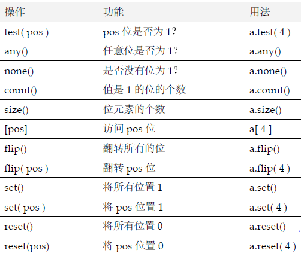

Miniutes
-
typical memory allocation and deallocation syntax
int *p = new int(4); delete p; // allocate an int in heap, initialized with 4 int *p = new int[4]; delete []p; // allocate an dynamic array with 4 elements - function argument default value syntax like: IntArray( int sz = DefaultArraySize );
-
Copy Constructor like:
IntArray array; // initialized with default constructor // 等价的初始化方式 IntArray ia1 = array; // initialized copy constructor IntArray ia2( array );
- virtual funtion call is de-referenced at run time.
- class extends: "IntArrayRC : public IntArray", the public means the IntArrayRC shares the public interface of its base class.
- ++pos 会比 pos++有更好的性能,因为pos++ 需要返回之前的值。
-
泛型算法接受一对迭代器它们标记了要遍历元素的范围,e.g. sort(ivec.begin(),ivec.end());
- #include <agorithm>
- 搜索search 算法find() find_if() search() binary_search() count()和count_if()
- 分类排序sorting 与通用排序ordering 算法sort() partial_sort() merge() partition() rotate() reverse()和random_shuffle()
- 删除deletion 算法unique()和remove()
- 算术numeric 算法accumulate() partial_sum() inner_product()和adjacent_difference()
- 生成generation 和变异mutation 算法generate() fill() transformation() copy()和for_each()
- 关系Relational 算法equal() min()和max()
- 关联数组(associated array): map<string, telephoneNum> telephone_directory;
- 文字常量: 3.14159F 0.1f 12.345L 0.0 3e1 1.0E-3 2. 1.0L true false \n \t \v L'a'(wchar_t)
-
Range based loops: it requires the object provides begin() and end() methods.
for(double x : prices) cout << x << endl;
- 全局变量对象会被初始化为0,局部对象及变量其值随机。
-
对象的初始化:
int main() { int uval; // uninitialized int ival = 1024; // implicit initialization. string project = "Fantasia 2000"; int ival( 1024 ); // explicit initialization string project( "Fantasia 2001" ); //每种内置数据类型都支持一种特殊的构造函数语法可将对象初始化为0 int intval = int(); // initialize intval to 0 double dval = double();// initialize as 0.0 vector< int > ivec( 10 ); // int() applied to each of the 10 elements float *p; // is better than float* p; } -
字符串
#include <cstring> const char *s = "hello"; string str("hello world"); string str1 = "hello world"; string str2(str); string str3 = str; // copy string. string str4 = str2 + str1; string str5 = s; // OK char *sp = str5; // failed. const char *sp = str5.c_str(); // OK -
const modifier
const char *p = "char"; // the pointed objected is constant const char *const p= "char"; // the pointer and object both are constant.
- 引用必须被初始化: int x; int &v = x;
- bool type: bool v = true/false;
- 可以借用enum来声明常量: enum { NUM_TRANS = 10};
-
array types:
const int array_size = 5; // initialized as: 0,1,2,0,0 int ia[ array_size ] = { 0, 1, 2 }; // the array index must be constant const char ca1[] = { 'C', '+', '+' }; // 3 elements const char ca2[] = "C++"; // 4 elemements. // 一个数组不能被另外一个数组初始化也不能被赋值给另外一个数组 // 而且C++不允许声明一个引用数组(即由引用组成的数组) int &iar[] = { ix, jx, kx }; // 错误: 不允许引用数组 // 错误: 不能用另一个数组来初始化一个数组 int ia2[] = ia; // 错误 const int array_size = 3; int ix, jx, kx; // ok: 类型为int*的指针的数组 int *iap [] = { &ix, &jx, &kx }; // 错误: 不允许引用数组 int &iar[] = { ix, jx, kx }; // 错误: 不能用另一个数组来初始化一个数组 int ia2[] = ia; // 错误 int main() { int ia3[ array_size ]; // ok // 错误: 不能把一个数组赋给另一个数组 ia3 = ia; return 0; } -
vector的元素被初始化为与其类型相关的缺省值算术和指针类型的缺省值是0 对于class
类型缺省值可通过调用这类的缺省构造函数.
vector< string > text; text.push_back("string"); vector<string>::const_iterator cit = text.begin(); // read only iterator for ( vector<string>::iterator it = text.begin(); it != text.end(); ++it) cout << *it << ' '; //任何一个插入操作都将增加vector 的大小而不是覆盖掉某个现有的元素 -
sizeof 返回对象的字节大小
#include <cstddef> // defines size_t sizeof (type name );// return bytes in size_t sizeof ( object ); sizeof object; int ia[] = { 0, 1, 2 }; size_t array_size = sizeof ia; // sizeof 返回整个数组的大小 size_t element_size = array_size / sizeof( int ); // sizeof 返回int类型的大小 -
bitset类支持位操作:
#include <bitset> bitset< 32 > bitvec; // all bits are initialized as 0, 0:31 bitvec.set(27); // set the 26th bit as 1. bool is_set = bitvec.any();
 -
类型转换:
int ival = 0; ival = 3.541 + 3; // 6: implicit type conversion: 3.541+3 => 6.651 => 6; 编译器往往会给出警告 ival = static_cast< int >( 3.541 ) + 3; // explict type convertion: convert double to int by compiler ival = int(3.541); // c++ style ival = (int) 3.541; // c style // the generic pointer void * can point to any type, but can't be de-referenced. int *pi = 0; char *pc = 0; void *pv; pv = pi; // ok: 隐式转换 pv = pc; // ok: 隐式转换 const int *pci = &ival; pv = pci; // 错误: pv 不是一个const void*. const void *pcv = pci; // ok
-
显式转换符号的一般形式如下:cast-name< type >( expression );
// case-name: static_cast const_cast dynamic_cast 和reinterpret_cast extern char *string_copy( char* ); const char *pc_str; char *pc = string_copy( const_cast< char* >( pc_str )); // const_cast: remove the const attributes // reinterpre_cast 通常对于操作数的位模式执行一个比较低层次的重新解释 // dynamic_cast 支持在运行时刻识别由指针或引用指向的类对象: down-casting,父类指针切成子类指针
Container
-
sequence container: vector,list
- vector 表示一段连续的内存区域每个元素被顺序存储在这段内存中对vector的随机访问比如先访问元素5 然后访问15然后再访问7 等等效率很高因为每次访问离vector起始处的位移都是固定的但是在任意位置而不是在vector末尾插人元素则效率很低 因为它需要把待插入元素右边的每个元素都拷贝一遍类似地删除任意一个而不是vector 的最后一个元素效率同样很低因为待删除元素右边的每个元素都必须被复制一
- 一个deque 也表示一段连续的内存区域但 是与vector 不同的是它支持高效地在其首部插入和删除元素它通过两级数组结构来实 现一级表示实际的容器第二级指向容器的首和尾
- list 表示非连续的内存区域并通过一对指向首尾元素的指针双向链接起来从而允许向前和向后两个方向进行遍历在list 的任意位置插入和删除元素的效率都很高指针必须 被重新赋值但是不需要用拷贝元素来实现移动另一方面它对随机访问的支持并不好 访问一个元素需要遍历中间的元素另外每个元素还有两个指针的额外空间开销
-
下面是选择顺序容器类型的一些准则:
- 如果我们需要随机访问一个容器则vector要比list 好得多
- 如果我们已知要存储元素的个数则vector又是一个比list好的选择
- 如果我们需要的不只是在容器两端插入和删除元素则list 显然要比vector好
- 除非我们需要在容器首部插入和删除元素否则vector 要比deque好
- associative container: map,set : keys are unique; multimap and multiset support multiple keys.
-
every container defines iterator: interator and const_iterator (required to interate const container)
// examples #include <vector> void even_odd( const vector<int> *pvec, vector<int> *pvec_even, vector<int> *pvec_odd ) { // 必须声明一个const_iterator, 才能够遍历pvec vector<int>::const_iterator c_iter = pvec->begin(); vector<int>::const_iterator c_iter_end = pvec->end(); for ( ; c_iter != c_iter_end; ++c_iter ) if ( *c_iter % 2 ) pvec_odd->push_back( *c_iter ); else pvec_even->push_back( *c_iter ); } -
容器对象也可以用由一对iterator 标记的起始元素和未元素后一位置之间的拷贝
vector<string> svec; vector<string> svec2( svec.begin(), svec.end() ); // 用svec 的全部元素初始化svec2 // 用svec 的前半部分初始化svec3 vector<string>::iterator it = svec.begin() + svec.size()/2; vector<string> svec3( svec.begin(), it ); string words[4] = { "stately", "plump", "buck", "mulligan" }; vector< string > vwords( words, words+4 ); int ia[6] = { 0, 1, 2, 3, 4, 5 }; list< int > ilist( ia, ia+6 );
Function
-
Linker directive: extern "C"; 链接指示符不能出现在函数体中
// 单一语句形式的链接指示符 extern "C" void exit(int); // 复合语句形式的链接指示符 extern "C" { // 表示函数printf()和scanf()是在C语言中写的, int printf( const char* ... ); int scanf( const char* ... ); } // 复合语句形式的链接指示符 extern "C" { #include <cmath> } -
函数对象帮助实现内联,以提高性能。
class LessThan { public: // 重载了函数调用操作符 bool operator()( const string & s1, const string & s2 ) { return s1.size() < s2.size(); } }; bool less_than( const string & s1, const string & s2 ) { return s1.size() < s2.size(); } stable_sort( texts.begin(), texts.end(), less_than ); // accept function pointer as 3rd argument // the function object support the function call be inlined. stable_sort( texts.be gin(), texts.end(), LessThan()); //LessThan() construct an object and passed into. // in the stable_sort function, the call looks like: 3rdargs(a,b), the object is called. -
预定义函数对象:算术/逻辑/关系.每个对象都是一个类模板其中操作数的类型被参数化.
#include <functional> plus< int > intAdd; // initiaized a function object. int ival1 = 10, ival2 = 20; // 等价于 int sum = ival1 + ival2; int sum = intAdd( ival1, ival2 ); plus<string> stringAdd; template <class FuncObject, class Type> Type BinaryFunc( FuncObject fob, const Type &val1, const Type &val2 ) { return fob( val1, val2 ); } // 调用 string::operator+() sres = stringAdd( sval1, sval2 ); dres = BinaryFunc( plus<double>(), dval1, dval2 ); // the list of predefined function class: // plus<Type>,minus<Type>,multiplies<Type>,divides<Type>,modulus<Type>,negate<Type>. // relation: equal_to<Type>,not_equal_to<Type>,greater<Type>,greater_equal<Type>,less<Type>,less_equal<Type> // logic_and<Type>, -
函数对象适配器:
-
binder 通过把二元函数对象的一个实参绑定到一个特殊的值上将其转换成一元函数对象,C++标准库提供了两种预定义的binder适配器bind1st
和bind2nd.
// count if the element value less or equal 10. count_if( vec.begin(), vec.end(), bind2nd( less_equal<int>(), 10 )); -
negator是一个将函数对象的值翻转的函数适配器:标准库提供了两个预定义的negator 适配器not1和not2.
count_if( vec.begin(), vec.end(), not1(bind2nd( less_equal<int>(), 10 )));
-
binder 通过把二元函数对象的一个实参绑定到一个特殊的值上将其转换成一元函数对象,C++标准库提供了两种预定义的binder适配器bind1st
和bind2nd.
Template
- A template is not compiled once to generate code usable for any type; instead, it is compiled for each type or combination of types for which it is used,This leads to an important problem in the handling of templates in practice: You must have the implementation of a template function available when you call it, so that you can compile the function for your specific type. therefore, the only portable way of using templates at the moment is to implement them in header files by using inline function
- Following the same principle, you can "parameterize" classes on arbitrary types. This is useful for container classes.
-
template parameter does not required to be type.
bitset<32> fIags32; // bitset with 32 bits bitset<50> flags50; // bitset with 50 bits template <class T, class container = vector<T>> // default template parameter. class can also be typename. class MyClass { typename T::SubType * ptr; // typename specific SubType is a type not static member. template <class T> void f(T); // member template function. }; class Q { typedef sometype SubType; }; MyClass<Q> x1; // equivalent to: MyClass<Q,vector<Q> >
Struct
-
Initialization
struct User { int id; //id char name[100]; //user name char *home; //home directory int passwd; //password }; // 顺序初始化的特点是: 按照成员定义的顺序，从前到后逐个初始化；允许只初始化部分成员； // 在被初始化的成员之前，不能有未初始化的成员；未显示初始化的自动设为0 struct User oneUser = {10, "Lucy", "/home/Lucy"}; struct User oneUser = { // C style 乱序初始化 ,g++ not support the syntax in .cpp files. .name = "Lucy", .id = 10, .home = "/home/Lucy" }; struct User oneUser = { // CPP style 乱序初始化. name:"Lucy", id:10, home:"/home/Lucy" }; -
struct shallow coping.
struct Temp a, b; a = b; // 浅拷贝:都是将以&b开始的，大小为sizeof(struct Temp)的内存区域中的数据. memcpy(&a, &b, sizeof(a)); // a.id = b.id; a.name = b.name; a.home = b.home; a.passwd = b.passwd;
Class
- 构造函数: 与类同名,无返回值.无需指定参数的构造函数(没有参数或参数有默认值)称为 默认构造函数 。
- 只有当未定构造函数时,编译器会提供默认构造函数。
-
如果类没有默认构造函数，则需要在构造时通过成员列表初始化或定义时显示的初始化。
class Demo { Demo(int v){} }; // no default constructor provided by compiler. class Container { Container():d(1){} Demo d; // initialized by member list. Demo e[2] = {Demo(1),Demo(2)}; // initialize at the definition } -
缺省构造函数:是指不需要用户指定实参就能够被调用的构造函数.
// 每个都是缺省构造函数 Account::Account() { ... } iStack::iStack( int size = 0 ) { ... } Complex::Complex(double re=0.0,double im=0.0) { ... } -
类初始化
class Account { public: Account() { // constructor do not have return type. _name = 0; // constructor can't be modified by volatile and const. _balance = 0.0; _acct_nmbr = 0; }; // 缺省构造函数 Account( const char*, double=0.0 ); // 声明中的参数名不是必需的, default value is provided. const char* name() { return _name; } private: char * _name; int _balance; int _acct_nmbr; }; // three equivalent object initialization Account acct1( "Anna Press" ); // recommended. Account acct2 = Account( "Anna Press" ); Account *pact = new Account( "Michael Lieberman", 5000 );// allocate on heap. Account acct3 = "Anna Press"; Account newAccount();// it declares a function return Account object. Account newAccount; // ok.it defines a object and initialized by default constructor, // if no default constructor defined, the object is not initialized. - 成员初始化表(member initialization list),由逗号分开的成员名及其初值的列表.成员初始化表只能在构造函数定义中被指定.
- const成员只能被初始化,不能被赋值.
- 基类的成员初始化和构造函数体的执行发生在派生类的成员初始化和构造函数体的执行之前.所以使用继承时, 要把基类的初始化列在成员初始化列表的最前面.多重继承,基类被初始化的顺序和它们被派生类继承的顺序一致。
- 尽可能使用成员初始化列表的习惯,不但可以满足const和引用成员初始化的要求，还可以大大减少低效地初始化数据成员的机会。
- 类成员是按照它们在类里被声明的顺序进行初始化的.它们的析构函数被调用的顺序总是和它们在构造函数里被创建的顺序相反。
- 基类数据成员总是在派生类数据成员之前被初始化
-
隐式类型转换
extern void print(const Account &acct); print("oops"); // will call Account::Account("oops") to generate a Account object and pass to print. -
Type Conversion in Class domain:
- Single-argument constructors: allow implicit conversion from a particular type to initialize an object.
- Assignment operator: allow implicit conversion from a particular type on assignments.
- Type-cast operator: allow implicit conversion to a particular type.
- explicit修饰符通知编译器不要提供隐式转换: explict 只能修饰构造函数.
- Const object could not open the normal member function.
- 多态基类的析构函数设定为虚函数。declare a virtual destructor in a class if and only if that class contains at least one virtual function
- 新用户常常会错误地认为如果不存在缺省构造函数则编译器会自动生成一个缺省构造函数并将其应用在对象上以初始化类的数据成员对象。 对于含有类数据成员或继承来的比较复杂的类这在部分上是对的,可能会生成一个缺省构造函数但是它不会为内置或复 合型的数据成员如指针或数组提供初始值
- 容器类,动态数组类需要缺省构造函数。
-
构造函数调用规则,如:Account account;
- 定义了缺省构造函数它被应用.
- 定义了缺省构造函数但它不是公有的 => 编译时刻错误:没有访问权限
- 没有定义缺省构造函数但是定义了一个或者多个要求实参的构造函数的定义被标记为编译时刻错误实参太少, 如果定义了其他构造函数则也有必要提供一个缺省构造函数,或者不提供构造函数。
- 没有定义缺省构造函数也没有定义其他构造函数该定义是合法的没有被初始化没有调用任何构造函数
- 拷贝构造函数有一个指向类对象的引用作为形式参数,一般是用const修饰的。
- 当构造函数体开始执行时所有const 和引用的初始化必须都已经发生。
- 成员类对象应该总是在成员初始化表中被初始化而不是在构造函数体内被赋值。
- 成员初始化表只提供该类数据成员的初始化,在构造函数体内对数据成员设置值是一个赋值操作。
- 初始化的顺序不是由名字在初始化表中的顺序决定而是由成员在类中被声明的顺序决定。
- 在声明时初始化和用成员列表初始化基本一致：只是在声明是无法引用this作为参数。
- 把用一个成员对另一个成员进行初始化如果你真的认为有必要的代码放到构造函数体内。
-
构造函数的执行过程被分成:
- 隐式/显式初始化阶段: 隐式初始化:按照声明的顺序依次调用所有基类 + 缺省构造函数。
- 一般的计算阶段(function body).计算阶段中数据成员的设置被认为是赋值而不是初始化。
- override 关键字：标记函数是在覆盖一个基类的虚函数。
- it's never legal to modify the return value of a function that returns a built-in type.
-
namespace special notices: methods parameter do not required namespace qualifier while return type required.
namespace DEMO { class Base { struct MYTYPE // private type { int a; }; MYTYPE process(MYTYPE param); }; } // the return type should use full qualifier, parameter use the simple one. DEMO::Base::MYTYPE process(MYTPE param) { } -
模板类的友元运算符及类型转换函数
template <class T> class Register { template <class U> friend inline std::ostream& operator<<(std::ostream &out,const Register<U> &rhs); operator bool() const { return bool(d)} // type conversion function, c++ primer plus 11.6 private: int d; }; template <class U> inline std::ostream& operator <<(std::ostream &out,const Regsiter<U> &rhs); { out << rhs.d; }
DEBUG
- field has incomplete type: https://stackoverflow.com/questions/2024658/field-has-incomplete-type
- use the functor: https://stackoverflow.com/questions/7787500/how-to-write-a-function-that-takes-a-functor-as-an-argument
-
passing a point of Derived class Object to the parameter accept Base class Object pointer. the rationale is that:
before the declaration of the parameter should be completed
class Derived; class BaseObject {} class Grandson { public:Grandson(const BaseObject* p){} }; class Child { public: // the constructor is defined at here. however, at this point, the UMC class is not completed known. // Child(UMC* p):b(p) {}; // error:no known conversion from UMC* to BaseObject* // Fixed it by move the constructor definition below the class UMC declaration. Child(UMC *p); Grandson b; }; class UMC : public BaseObject { public: UMC():obj(this) {} Child obj; }; Child::Child(UMC *p):b(p){} // The fixed solution. int main() { UMC u; } - http://tipsandtricks.runicsoft.com/Cpp/Explicit.html
- https://stackoverflow.com/questions/14492523/no-known-conversion-from-pointer-to-reference-to-pointer
TODO: C++ Primer Chapter 12 Function Object.
struct VS class
- struct 里面的数据会对齐。
-
不能用memcmp来比较struct: http://blog.csdn.net/peng314899581/article/details/60766892
问的人太多，干脆整理个FAQ吧。 首先，讨论这个问题应该仅从语法上讨论，如果讨论不同人之间编程风格上的差异，那这个问题是没有答案的。毕竟不同的人偏好不同。 从语法上，在C++中（只讨论C++中）。class和struct做类型定义时只有两点区别： （一）默认继承权限。如果不明确指定，来自class的继承按照private继承处理，来自struct的继承按照public继承处理； （二）成员的默认访问权限。class的成员默认是private权限，struct默认是public权限。 除了这两点，class和struct基本就是一个东西。语法上没有任何其它区别。 不能因为学过C就总觉得连C++中struct和class都区别很大，下面列举的说明可能比较无聊，因为struct和class本来就是基本一样的东西，无需多说。但这些说明可能有助于澄清一些常见的关于struct和class的错误认识： （1）都可以有成员函数；包括各类构造函数，析构函数，重载的运算符，友元类，友元结构，友元函数，虚函数，纯虚函数，静态函数； （2）都可以有一大堆public/private/protected修饰符在里边； （3）虽然这种风格不再被提倡，但语法上二者都可以使用大括号的方式初始化：Aa={1,2,3};不管A是个struct还是个class，前提是这个类/结构足够简单，比如所有的成员都是public的，所有的成员都是简单类型，没有显式声明的构造函数。 （4）都可以进行复杂的继承甚至多重继承，一个struct可以继承自一个class，反之亦可；一个struct可以同时继承5个class和5个struct，虽然这样做不太好。 （5）如果说class的设计需要注意OO的原则和风格，那么没任何理由说设计struct就不需要注意。 （6）再次说明，以上所有说法都是指在C++语言中，至于在C里的情况，C里是根本没有“class”，而C的struct从根本上也只是个包装数据的语法机制。 最后，作为语言的两个关键字，除去定义类型时有上述区别之外，另外还有一点点：“class”这个关键字还用于定义模板参数，就像“typename”。但关键字“struct”不用于定义模板参数。